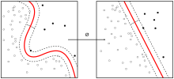
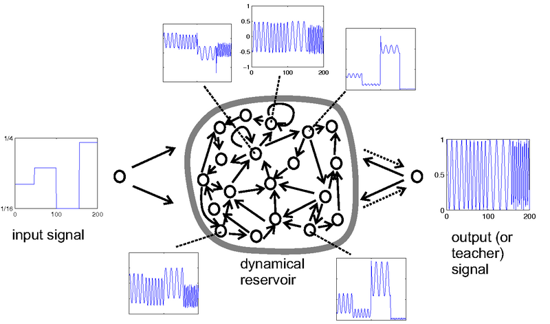
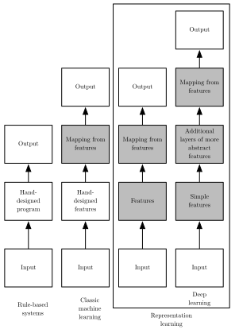
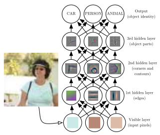
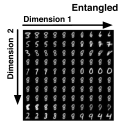
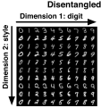
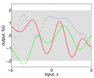
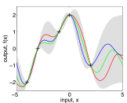

We can formulate \(f(\vec{w}) = 1/2 \norm{\vec{w}}^2\) and the constraints as: \[\begin{align*}
g_i(\vec{w}) = -y^{(i)} \Big( \vec{w}^T \vec{x}^{(i)} + b \Big) + 1 \leq 0, i= 1,... , m
\end{align*}\]
and now solve the Lagrangian \[\begin{align*}
\mathcal{L}(\vec{w}, b, \vec{\alpha}) = \frac{1}{2} \norm{\vec{w}}^2 - \sum_{i=1}^{m} \alpha_i \Big( y^{(i)} \big( \vec{w}^T \vec{x}^{(i)} + b \big) - 1 \Big)
\end{align*}\]
by setting the derivatives to zero (\(\nabla_b \mathcal{L} = 0 \text{ because of the KKT conditions}\)): \[\begin{align*}
\nabla_{\vec{w}}\mathcal{L} (\vec{w}, b, \vec{\alpha}) = \vec{w} - \sum_{i=1}^{m} \alpha_i y^{(i)} \vec{x}^{(i)} = 0 \Rightarrow \vec{w} = \sum_{i=1}^{m} \alpha_i y^{(i)} \vec{x}^{(i)}
\end{align*}\]
Finding optimal weights
This gives us the optimal weights when having found the Lagrangian multipliers on our inputs: \[\begin{align*}
\vec{w}^* = \sum_{i=1}^{m} \alpha_i y^{(i)} \vec{x}^{(i)}
\end{align*}\]
Importantly, when now use this for a novel input \(\vec{x}'\) we would apply \({\vec{w}^*}^T \vec{x}' + b\) and decide classification based on the sign.
Using the above equality, we can reformulate this as \[\begin{align*}
{\vec{w}^*}^T \vec{x}' + b &= \Big( \sum_{i=1}^{m} \alpha_i y^{(i)} \vec{x}^{(i)} \Big)^T \vec{x}' + b\\
&= \sum_{i=1}^{m} \alpha_i y^{(i)} \langle \vec{x}^{(i)}, \vec{x}' \rangle + b
\end{align*}\]
Largest margin Separation
this only involves some data points (support vectors)
the constrained optimization can be solved through a Lagrange multiplier
this leads to the hyperplane decision function \[ \alpha_i \geq 0, \\
f( \vec{x}) = sgn(\sum_{i=1}^m \alpha^{(i)} y^{(i)} \langle \vec{x}, \vec{x}^{(i)} \rangle + b \ )\]
\[ \max_{\vec{w}, b} \min \{ \norm{\vec{x} - \vec{x}^{(i)}} \} \\
with \langle \vec{w}, \vec{x} \rangle + b = 0 \text{ defining the hyperplane}
\]
Application of Kernel
Example of a labeled data inseparable in 2-Dimension is separable in 3-Dimension.
Support Vector Machine

SVMs go back to (Vapnik 1998) , and a good tutorial can be found in (Burges 1998).
Kernel Trick
The kernel trick for kernel methods as SVMs is a substitution:
All computations can be formulated in a scalar product space.
We introduce a kernel function – this express the scalar product in the higher dimensional feature space in terms of the lower-dimensional input space.
The kernel function evaluates the function and scalar product of the feature space only from the lower-dimensional input space.
Temporal Filters can be seen as dynamical systems that compute at each time step a state that is some function of previous states and the current input:
that allow, e.g., to selectively damp/enhance specifiable frequency bands of the input time sequence. For example a smoothing filter:
\[ s_t = (1 - \gamma) s_{t-1} + \gamma x_{t} \]
… to Dynamical Systems
Yet, combining linear filters always leads back to a linear filter.
Richer processing can only occur when non-linearities are included.
For example, we can consider non-linear filters arising from recurrent neural networks as in reservoir computing.
Learning from Random Features
Simple learning approach in a feedforward neural network:
using randomly initialized early layers and keep them fixed (comparable to expansion in SVMs) – use large input layers that provide diversity
During learning: only adapt output weights – linear transformation of the (random) features.
Such an expansion of the input space can facilitate learning and allow for better separability.
Random Features in a Recurrent Neural Net
Echo state networks apply the same idea in a recurrent neural network:
Initialize the recurrent neural network randomly and keep it fixed.
The same holds true for the projection of the input onto the recurrent layers.
Only train the connections towards the output layer which makes learning very simple.
The recurrent part is called a reservoir – it should cover a diversity of dynamics that can be recruited.
Following (Hinton 2013) in his Advanced Machine Learning Course.
Setting the Connections inside the Reservoir
Crucial for Echo State Networks is the setup of the random recurrent connections:
They have to kept bound and fulfill the echo state property to prevent dying or exploding activations.
Still, activities may decay too fast or too slowly. Therefore, the reservoir has to be tuned in a way that the dynamics of the features match the time scales of the application task.
Echo Property
Without external excitation all activities of the reservoir will decay slowly to zero. A criterion for this is that the spectral radius (the largest eigenvalue of \(A^TA\)) is less than 1 (or set to 1).
Echo State Network
Input projects onto reservoir, here a real value.
Target output: is a sine wave with the frequency given by the input.

(Jaeger 2007)
Echo State Network Example Results
A test run of the frequency generator from the previous slide.
In the back, the input step function is shown.
The black sinewaves is the target output (unknown to the network).
The gray sinewaves is the network output – which ends up in a phase shift but maintaining the correct frequency.
Example code from [https://github.com/cknd/pyESN] and adapted [https://github.com/malteschilling/advml_binder/]: start here using binder
Recap – Representation Learning
Representation Learning
Current ML Pipeline 
End-to-End Learning in Deep NN 
(Goodfellow, Bengio, and Courville 2016)
Example: Waymo
Scene Representation in Autonomous Driving
Features: Transfer Learning
Learning for multiple tasks – building a common representation.
(Nayak 2019)
Autoencoder (Weng 2018)
Entangled Representation

Autoencoder
Disentangled Representation

Encoder translates high-dimension input into latent low-dimensional code.
Decoder recovers data from the code.
Support Vector Machine
Support vector machines implement the large margin principle.
They apply non-linear mappings.
Importantly, the scalar product is not computed explicitly in the feature space. using the Kernel Trick. This is much more efficient.
The kernel function (weighted by multipliers) is applied wrt. the support vectors.
SVMs go back to (Vapnik 1998) , and a good tutorial can be found in (Burges 1998).
Outlook – Bayesian Reasoning
Gaussian Processes
Prior
Three random function rollouts for a zero-mean prior.
Posterior
Three random function drawn from the posterior that includes example points.